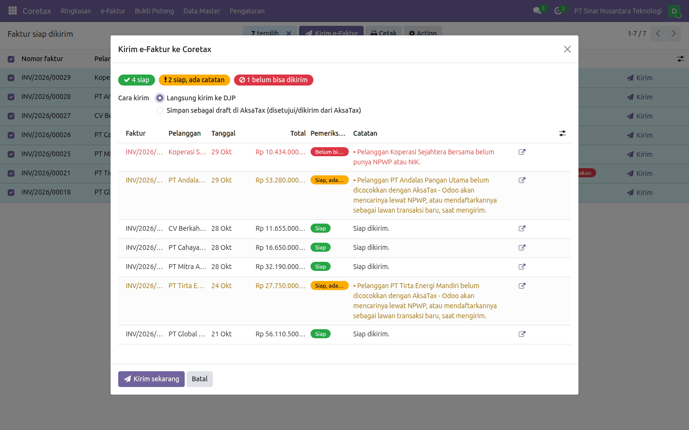
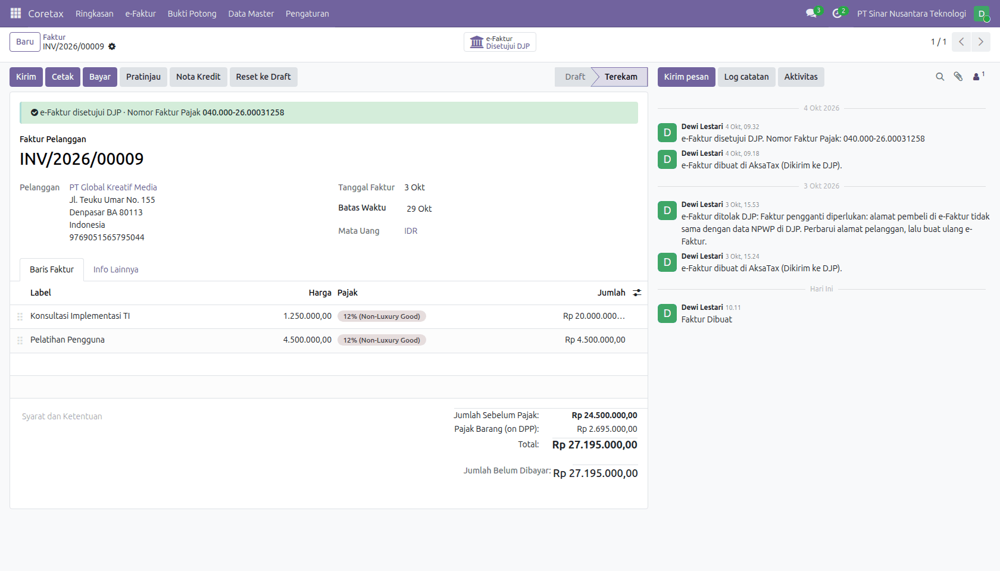
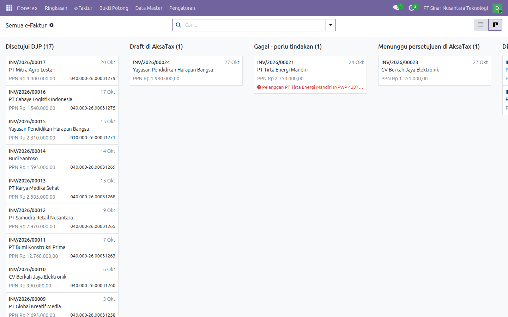
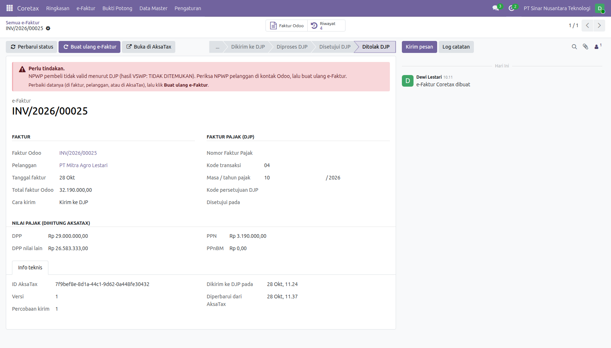
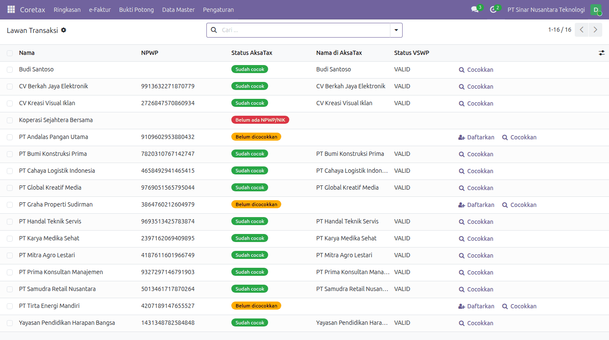
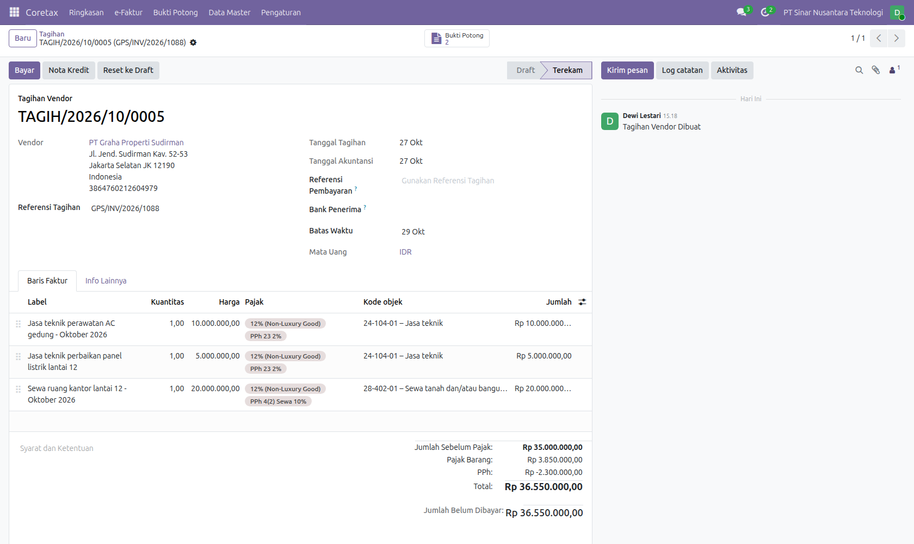
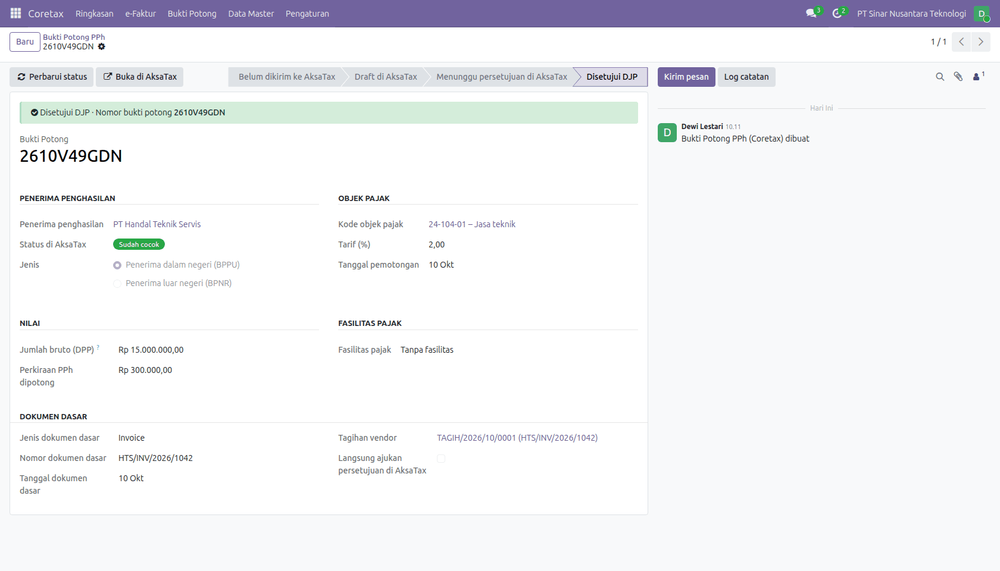
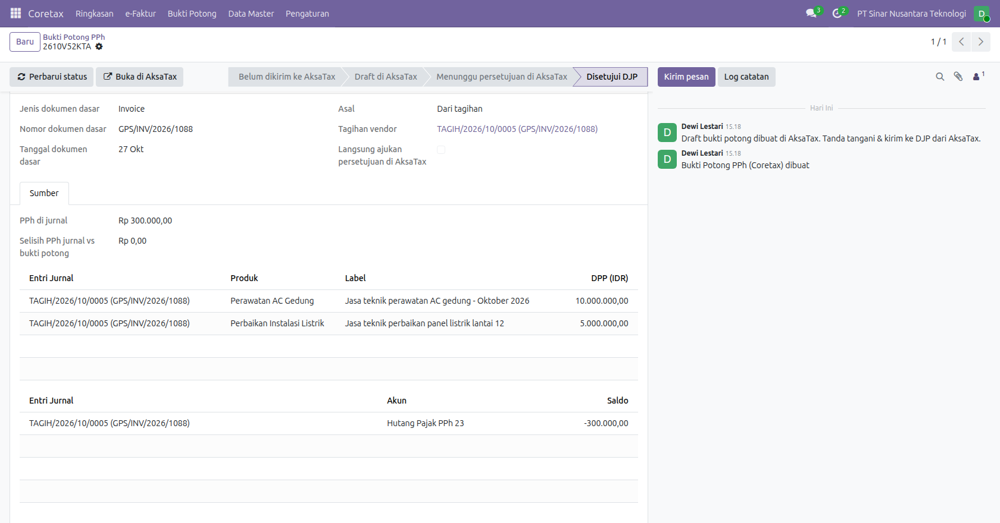
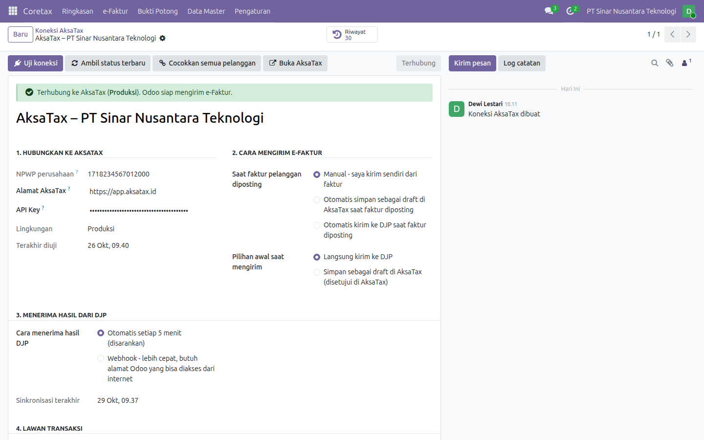
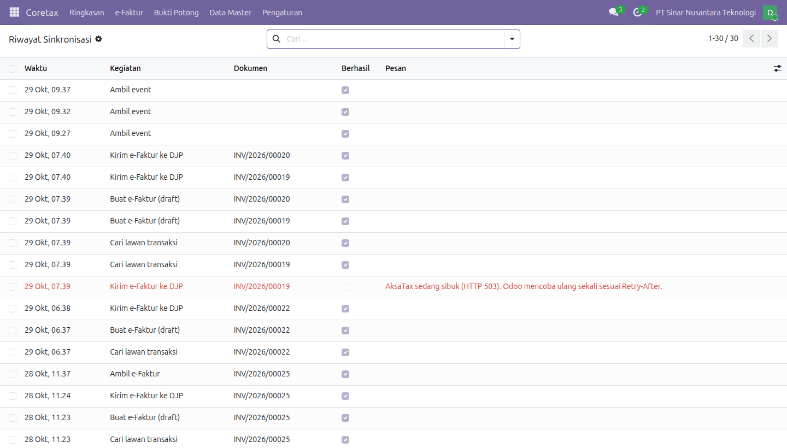

Tim keuangan cukup bekerja di Odoo. Modul ini mengurus pengiriman, pemantauan status, dan tindak lanjutnya.
Kirim satu faktur atau puluhan sekaligus dengan satu klik. Tidak perlu lagi mengunduh XML lalu mengunggahnya ke Coretax.
NPWP/NIK, kode transaksi, kode barang/jasa, mata uang, dan tanggal diperiksa sebelum dikirim, dengan pesan yang mudah dipahami.
Odoo mengambil status terbaru setiap 5 menit, atau langsung lewat webhook bertanda tangan HMAC. Nomor Faktur Pajak tampil di faktur.
Baris e-Faktur disusun dengan penyusun data bawaan Odoo (l10n_id_efaktur_coretax), jadi angkanya sama dengan XML Coretax resmi. PPh di bukti potong sama dengan Utang PPh di jurnal.
Pilih banyak faktur sekaligus dari daftar Siap dikirim. Setiap faktur langsung diberi tanda Siap, Siap, ada catatan, atau Belum bisa dikirim beserta alasannya. Faktur yang belum lengkap tidak ikut terkirim.
Pilih cara kirim: langsung ke DJP, atau simpan sebagai draft untuk disetujui di AksaTax.

Setelah DJP menyetujui, faktur Odoo menampilkan status dan Nomor Faktur Pajak. Setiap langkah, termasuk penolakan dan pengiriman ulang, tercatat di chatter faktur.
Faktur yang e-Faktur-nya sedang diproses atau sudah disetujui DJP tidak bisa dikembalikan ke draft atau dibatalkan begitu saja di Odoo.

Lihat dalam bentuk daftar atau kanban: disetujui DJP, draft di AksaTax, menunggu persetujuan, diproses DJP, sampai yang gagal. Filter per bulan, masa pajak, atau pelanggan.

e-Faktur yang ditolak DJP atau gagal dikirim dikumpulkan di satu daftar, lengkap dengan alasannya. Penanggung jawab faktur juga mendapat aktivitas "Perbaiki e-Faktur" di Odoo.
Perbaiki datanya, lalu klik Buat ulang e-Faktur. Versi lama tetap tersimpan sebagai riwayat.

Kontak dicocokkan dengan Lawan Transaksi AksaTax lewat NPWP: semua sekaligus, satu per satu, atau otomatis saat mengirim. Yang belum terdaftar bisa didaftarkan langsung dari Odoo.
NPWP, NIK, paspor, NITKU/TKU, alamat, dan email diambil dari field kontak standar, dan bisa diganti field kustom atau Studio.

Pasang pajak PPh di baris tagihan vendor, misalnya PPh 23 2% untuk jasa teknik dan PPh 4(2) 10% untuk sewa ruang, di tagihan yang sama. Kode objek pajak terisi otomatis dari pajaknya dan bisa diganti per baris.
Utang PPh tercatat per kode objek, terpisah dari PPN, dan hutang usaha langsung netto. Empat pajak siap pakai untuk perusahaan Indonesia: PPh 23 2%, PPh 23 SKB 0%, PPh 4(2) Sewa 10%, dan PPh 26 20%.

Setiap kode objek di tagihan menjadi satu bukti potong, lengkap dengan penerima, DPP, tarif, dan dokumen dasar. Kirim ke AksaTax sebagai draft untuk ditandatangani di sana; nomor bukti potong dari DJP kembali ke Odoo.
Tagihan tanpa pajak PPh tetap bisa dibuatkan bukti potong lewat tombol Buat Bukti Potong.

Tab Sumber menunjukkan baris tagihan dan journal item Utang PPh di balik setiap bukti potong, beserta selisih antara PPh di jurnal dan perkiraan PPh DJP.
Nota kredit mengurangi DPP bukti potong yang belum dikirim. Tagihan yang bukti potongnya sudah di AksaTax tidak bisa direset, dibatalkan, atau dihapus, dan perubahan nilainya memicu aktivitas pembetulan.

Isi alamat AksaTax dan API key, lalu klik Uji koneksi. Tentukan apakah e-Faktur dikirim manual, disimpan sebagai draft, atau dikirim otomatis saat faktur diposting. Setiap perusahaan di Odoo punya koneksi sendiri.

Semua komunikasi dengan AksaTax disimpan selama 90 hari, lengkap dengan ID Permintaan untuk tim dukungan AksaTax. API key tidak pernah ikut dicatat. Saat AksaTax sibuk, Odoo mencoba ulang sekali, dan setiap pengiriman memakai Idempotency-Key sehingga tidak ada dokumen ganda.

Tombol Batalkan e-Faktur meminta alasan (minimal 5 karakter). Statusnya menjadi Proses batal, lalu Dibatalkan. Pembatalan ditahan selama e-Faktur masih punya nota retur aktif.
Tombol Ganti e-Faktur membuka faktur untuk diedit. Saat dikirim lagi, Odoo mengirim faktur pengganti dengan NSFP asli, dan e-Faktur lama menjadi Diganti setelah yang baru disetujui. Dari Odoo, e-Faktur bisa diganti satu kali; penggantian kedua dilakukan di AksaTax/DJP.
Tombol Unduh PDF Faktur Pajak menyimpan PDF resmi sebagai satu lampiran di faktur, diperbarui setiap kali diunduh.
Dari nota kredit yang sudah diposting (pelanggan atau vendor), klik Kirim nota retur. Nilai DPP, PPN, dan PPnBM dihitung dengan cara yang sama seperti AksaTax dan masih bisa diubah di wizard.
Keluaran butuh faktur asal yang e-Faktur-nya sudah disetujui. Masukan butuh isian Nomor Faktur Pajak vendor (13/16/17 digit, tab Info Lainnya) di tagihan vendor asal.
Status kembali otomatis. Batalkan nota retur meminta alasan. Selama nota retur aktif, nota kredit tidak bisa direset, dibatalkan, atau dihapus. Daftarnya ada di tombol pintar Nota Retur dan menu Coretax › e-Faktur › Nota Retur.
Jumlah siap dikirim, sedang diproses, disetujui bulan ini, perlu tindakan, serta DPP dan PPN masa pajak berjalan.
Produk berkode umum 000000, satuan tanpa kode Coretax, dan pelanggan tanpa NPWP/NIK, yang bisa langsung diperbaiki dari daftarnya.
Pengguna Invoicing otomatis menjadi Pengguna Coretax, dan Administrator Akuntansi otomatis menjadi Administrator Coretax.
e-Faktur bisa dikirim dengan kode 07 dan 08 (keterangan tambahan dari tab Info Lainnya; 07: 1-31, 08: 1-10) dan kode 10. Kode 10 butuh AksaTax versi terbaru.
Tombol Perbarui di AksaTax di kontak, juga sebagai aksi daftar, memperbarui lawan transaksi yang sudah cocok di AksaTax.
account dan l10n_id_efaktur_coretax (bawaan Odoo, ikut terpasang otomatis).faktur:baca, faktur:tulis, faktur:kirim, bupot:*, dan status:baca.Hal berikut belum tersedia di Public API AksaTax, jadi dilakukan langsung di aplikasi AksaTax. Tombol Buka di AksaTax membuka dokumennya.
PPh dicatat saat tagihan vendor diposting. PPh yang baru dipotong saat pembayaran, PPh yang dipotong pelanggan, dan kurs pajak KMK untuk tagihan valas belum didukung.
Screenshot di halaman ini memakai data contoh fiktif.